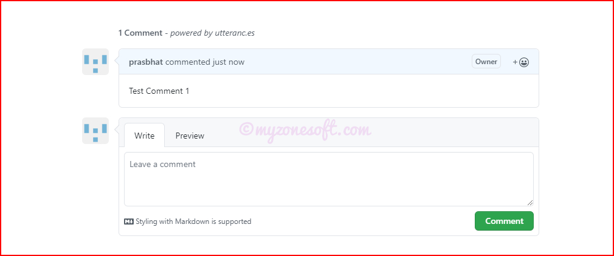

In this article we will see some advanced customization done to the basic Hugo project that was created here.
Once we have the basic project created in Hugo and hosted on GitHub Pages, we can look at customizing the project, for the ease of use.
In this article, I will focus on some of the customizations, I have used to make the project look and feel better and also increase the ease of use, as I create more posts.
NOTE:
When we have to update the files that are existing in Themes folder, it is always a good practice to copy that file into the equivalent path of our local root folder, for updating.
Hugo, when it has to fetch a file, it will always first search the local folder and then the Themes folder.
I am using Mainroad theme and hence all the updates shown below are relevant to that theme. If you are using different theme, some of the file path and attributes may vary.
Auto-numbering to Headers and TOC in Pages
When you generate a website using Hugo, it doesn’t provide any out of the box Auto Numbering support for Headings, Sub-Headings and TOC in Hugo Pages.
Follow these steps to enable Auto Numbering feature in your Hugo website:
Add autonumbering property to all our pages
First of all, add a custom property autonumbering to all our Hugo pages.
We can add this to all our pages in 2 ways:
We can also add this to the config.toml file, so that it is available for every pages.
[Params]
...autonumbering = true......
By adding it to the FrontMatter of the every page or by adding to the default.md template.
---...autonumbering: true---
When we add it to the config.toml file, it will be available for every page, by default and then we can enable or disable auto-numbering for a specific page using this property on that page’s FrontMatter.
Add CSS Class to single.html
Next, we are going to edit layouts/_default/single.html file and add a condition on article element to add autonumbering CSS class based on autonumbering property is enabled or disabled.
Include the css required for styling the Main Menus and Sub Menus. This is an important step, without which Menus and Submenus will not work the way we want them to.
It will be good if readers can get to know, how much time does the particular post take to read, on an average.
Hugo provides this functionality, we need to configure our code to enable that.
Follow these steps to enable Reading Time feature in your Hugo website:
Add some Analytics to your site with the help of Google Analytics.
Create Account in Google Analytics
First you need to create an Account in Google Analytics here, if you don’t have already.
Configure Google Analytics
Click on Admin in the bottom left-hand corner of your dashboard.
In Admin, in the Account column, click Create Account.
Provide an account name. Configure the data-sharing settings to control which data you share with Google.
Click Next to add the first property to the account.
In the Property column, click Create Property.
Google Analytics- Account & Property
Enter a name for the property and select the reporting time zone and currency.
If a visitor comes to your website on a Tuesday in their time zone, but it’s Monday in your time zone, the visit is recorded as having occurred on Monday.
Click Next. Select your industry category and business size.
Click Create and accept the Analytics Terms of Service and the Data Processing Amendment.
In the Property column, click Data Streams then Add stream.
Click iOS app, Android app, or Web (Since we are doing for our website, we will choose Web.)
Enter the URL of your primary website, e.g., “example.com”, and a Stream name, e.g. “Example, Inc. (web stream)”.
You have the option to enable or disableEnhanced measurement.
Click Create stream.
Add G- ID to Hugo Website
You’ll need to add the Analytics tag to your web pages to begin seeing data in your new Google Analytics 4 property.
Click Admin, in the Property column, check that you have your new Google Analytics 4 property selected, then click Data Streams, then Web. Click the data stream.
Your “G-” ID appears at upper right. Copy the “G-” ID.
Google Analytics- G- ID
Go to the config.toml and paste the “G-” ID obtained above, for the parameter googleAnalytics.
googleAnalytics="G-C3MLHYNGL3"
Deploy the code and that’s it.
From now on, our website will be tracked on the Google Analytics, providing us all information regarding pages views, posts accessed, number of users and many more.
Track localhost
This code would not track the hits to the localhost. If you want localhost also to be tracked, then you need to modify the code.
Remove the highlighted lines from the section above, so that Google Analytics can track the localhost also.
Add Comments to your Hugo Website
Utteranc.es is a lightweight comments widget, which allows you to use GitHub Issues for blog comments. It’s open source, looks clean, comments are stored on GitHub, and even comes with a dark theme.
Utterances Limitations
Readers must have a GitHub account to comment.
Utterances supports no other login or authentication mechanisms.
For storing comments, Utterances supports only GitHub.
GitLab, BitBucket, and so on are not supported.
Implementing Utterances
You will need to have your website hosted on GitHub, in a public repository, in order for utterances to work as intended.
Install utterances app on that repo. Select the above public repo from the drop-down menu that will appear.
Utterances App Setup
Run the Utterances configuration tool to generate the script configuration. Fill in the requested form and it would generate the custom html which can be copy & pasted into your template.
name of the repository : Usually, it will be something like «username»/«username».github.io (or more generally owner/repo)
Blog Post ↔️ Issue Mapping: Choose the mapping between blog posts and GitHub issues.
Utterances Blog Post Issue Mapping
label (optional): as the comments will be managed via GitHub Issue system, you will need to set-up a proper label to identify those issues created by Utterances.
theme: your choice of a light or dark theme, according to the overall style of your current blog template.
Copy the Enable Utterances script.
Utterances Enable Script
Update the layouts/partials/comments.html - Replace everything in it with utterances script code.
That’s it. Now when you refresh the browser, you can see the Comments section available.
Utterances Comments Section
As mentioned earlier, one drawback of this tool is, it works only with GitHub and user has to login with their GitHub account, before leaving comments.
Click on “Sign in wih GitHub”.
You will be presented with the GitHub Login page.
After you login, you will be able to comment.
Utterances Comments Section Enabled
After adding comments

Utterances After Comments
These are some of the enhancements, I have implemented in my Hugo project, to make it more enjoyable.
About Prashanth Bhat
Prashanth Bhat has about 15+ years of Developing/Coding knowledge. He loves to work with Technology, learn new things and share his learnings with others. For comments/feedback you can reach here.